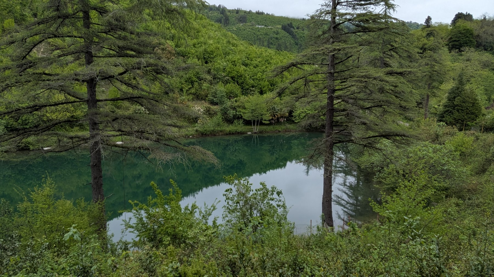
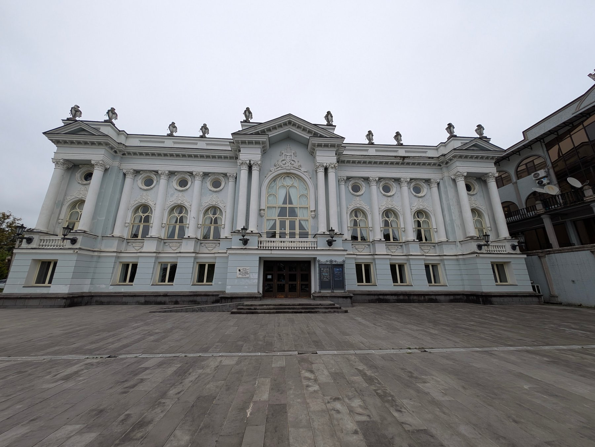
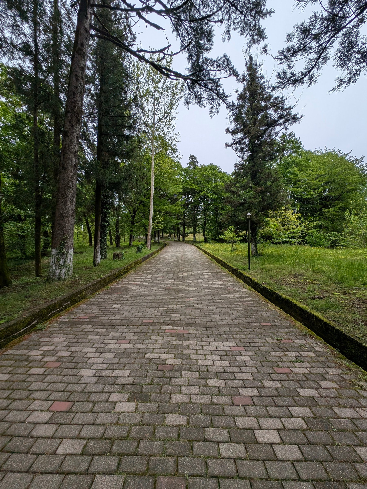
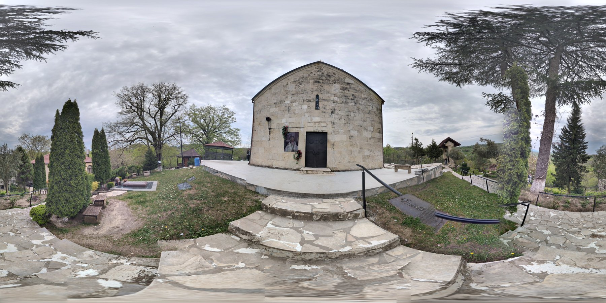
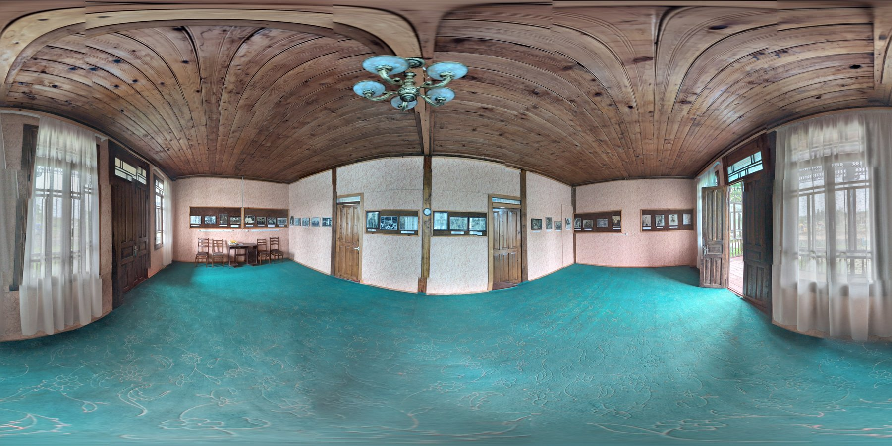
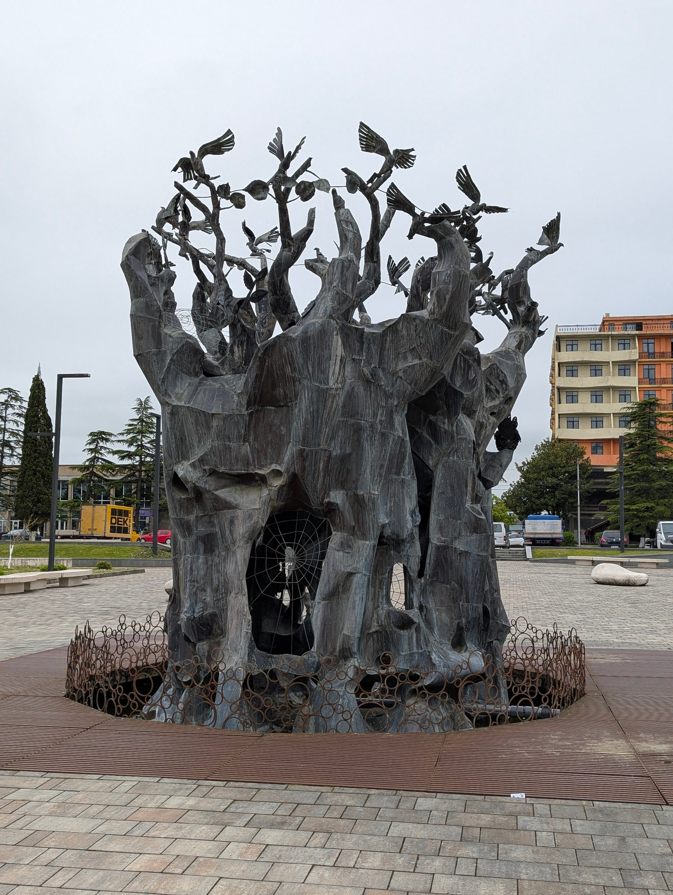

eTwinning / პროექტი 16
From Classroom
to Virtual Space.
საკლასო ოთახიდან ვირტუალურ სივრცემდე
საკლასო ოთახიდან ვირტუალურ სივრცემდე — eTwinning-ის პროექტი, რომელიც აერთიანებს მონახულებული ადგილების ფოტოებს, პანორამულ კადრებსა და ვიდეომასალას.

პროექტის შესახებ
რეალური ადგილები —
ციფრული აღმოჩენებისთვის.
„From Classroom to Virtual Space“ eTwinning-ის პროექტია. მის მასალებში ადგილების მონახულება და ფოტოგადაღება ციფრული სივრცის თემას უკავშირდება: ჩვეულებრივ ფოტოებთან ერთად შეგროვებულია პანორამული კადრები და ვიდეოები.
ფოტოკოლექციაში წარმოდგენილია პაპანწყვილი, სენაკის თეატრი, ხობის მონასტრის გარემო და ხობის ცენტრი. განსხვავებული ხედები ბუნებისა და კულტურული სივრცეების გაცნობას გვთავაზობს.
ქვემოთ შეგიძლია დაათვალიერო შერჩეული ფოტოები, გაადიდო პანორამული კადრები და ნახო პროექტის ვიდეო.
პროექტის მასალები
ადგილები და ხედები.










